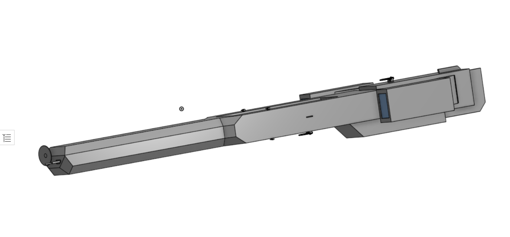
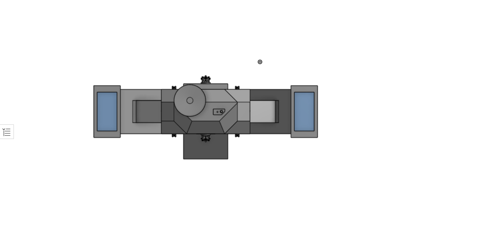

The Heart of many fleets, this carrier design allows for reliable deployment and recovery of fighter craft, even when under fire, with its modular radiator-engine stilt design, the ship can “tuck in”, reducing its overall cross section whilst in battle. Despite being a carrier it is also not helpless when caught in direct capital ship to capital ship combat, largely due to the presence of its heavy coilguns, normally employed as point defense.
 